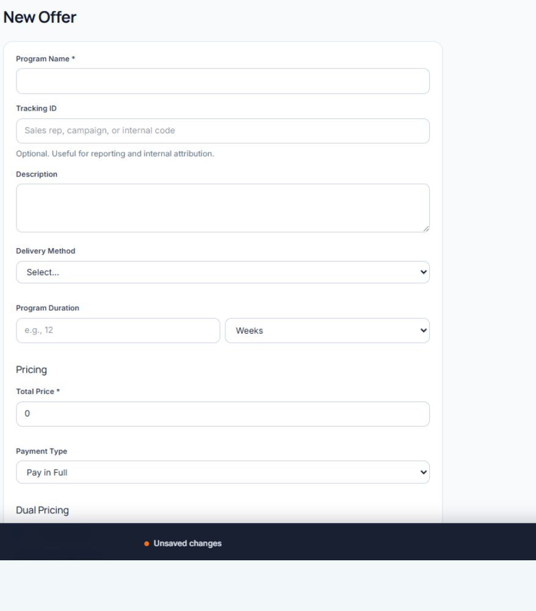

Private beta operating guide
Use ScaleSafe with a clean, repeatable workflow.
ScaleSafe connects enrollment, payment, fulfillment, communication, and client engagement to the correct client program. This guide follows the order a merchant should actually use.
Complete merchant setup
Open Settings inside the correct GoHighLevel sub-account. Enter the merchant's business information before treating Provisioning Health as a final certification.
- Business identity: legal name, brand name, support email, website, location, industry, service type, and description.
- Enrollment funnel URL: enter the merchant's GHL funnel domain so generated enrollment links use the correct subdomain.
- Evidence modules: enable the collection modules the merchant will actually use.
- Workflow settings: confirm engagement, dunning, reminder, and pulse behavior for this location.
- Provisioning Health: run the check after merchant fields, snapshot assets, workflows, and processors are in place.
Connect the payment channels the merchant will use
Open Settings > Payments. ScaleSafe supports different controls for each payment channel.
| Channel | What ScaleSafe uses it for | Important setup note |
|---|---|---|
| Stripe | Card, ACH, recurring billing, refunds, saved methods, disputes, and early fraud warnings. | Use a sandbox account for review testing before switching the merchant to live processing. |
| NMI | Card, vault, recurring billing, refunds, saved methods, and named MID routes. | Configure the official webhook and Query API access needed for reliable transaction and vaulted-card metadata. |
| Whop | Hosted checkout, initial and recurring payment tracking, refunds, and membership lifecycle actions when Whop IDs exist. | Whop collects the payment inside its hosted form; ScaleSafe keeps enrollment and evidence records. |
| FanBasis | Foundation only during beta preparation. | Checkout remains unavailable until the integration is certified against an approved account. |
Choose a default processor for offers that do not have an explicit override. Test each processor path the merchant plans to use.
Create an offer that matches the real sale
The offer defines what the client buys, how they pay, what they accept, and what fulfillment ScaleSafe should track.

Choose the correct client action
A client profile contains Overview, Programs, Payments, Evidence, Messages, and Files. The action used at the top of the profile determines what happens next.
- Send Offer
- Sends the selected enrollment link through the configured GHL email or SMS workflow. The client reviews the offer, accepts terms, and pays.
- Quick Manual Sale
- Collects payment first. When an offer is selected, the client receives a consent-only enrollment packet afterward. Whop checkout stays inside the QMS modal.
- Assign Offer
- Directly enrolls the client without consent pages or payment. Use only when payment and consent are intentionally handled elsewhere.
- Send Message
- Sends a merchant-written email or SMS through GHL and preserves the communication in the client record.
Use processor truth and ScaleSafe records together
The Payments workspace includes the ledger, client payment management, and reconciliation.
- All Payments: filter by tracking ID, processor, billing type, status, and date.
- Clients: review total charged, refunded, and the most recent payment before opening payment management.
- Reconciliation: identify missing processor IDs, overdue billing, duplicates, unassigned payments, and recent failures.
Refund, pause, resume, cancel, saved-method charge, and payment-update controls require the processor identifier shown on that record. ScaleSafe should change local state only after the processor confirms the action.
Read evidence in the context of one enrollment
The Evidence tab can include consent, payment, attendance, sessions, milestones, pulse responses, communication, appointments, service access, course progress, resources, refunds, cancellations, and verified external activity.
ScaleSafe has a defensible match to one exact program enrollment.
The activity belongs to the client, but ScaleSafe has not safely assigned it to one program.
Unlinked activity remains useful client context. It must not be presented as proof for an unrelated transaction. ScaleSafe never chooses the newest enrollment simply because it is newest.
Use milestones and pulse responses as a client-service loop
Milestones document what the merchant delivered and what the client was responsible for. Client sign-off creates a separate signed record.
Pulse check-ins ask the client about progress, satisfaction, concerns, and whether follow-up is needed. A response that requests attention appears on the Dashboard so the merchant can respond while the relationship is active.
- Confirm the offer has pulse enabled and a cadence.
- Confirm the GHL ScaleSafe App Event workflow is published and allows the intended re-entry behavior.
- Confirm the app event reached GHL, the outbound message was observed, and the client response was submitted.
- Confirm the response is linked to the correct enrollment.
Compile a defense around the disputed transaction
- Select the client and the actual disputed transaction whenever it is available.
- Choose the card brand reason code and enter the processor's real response deadline.
- Compile the packet and read the letter, exhibits, and PDF as one submission.
- Correct any inaccurate statement. A Needs Review packet is not submission-ready by default.
- Submit through the supported processor workflow or record the merchant's external submission.
- Record the bank's outcome when it arrives.
Connect fulfillment without creating evidence noise
Evidence Connections currently includes native GHL Fulfillment, Zoom, the Custom Software API, and the staged integration catalog.
- Each connection belongs to the current GHL sub-account.
- External events become program evidence only after ScaleSafe resolves one exact enrollment.
- Ambiguous events remain outside the defense timeline.
- Test events are diagnostic only and do not become production evidence.
- Merchants should not be required to repair events one at a time.
Daily merchant routine
- Review urgent dispute deadlines.
- Respond to pulse check-ins marked for follow-up.
- Review failed payments and reconciliation warnings.
- Review pending defense packets and actual processor deadlines.
- Follow up with at-risk clients while service concerns can still be addressed.